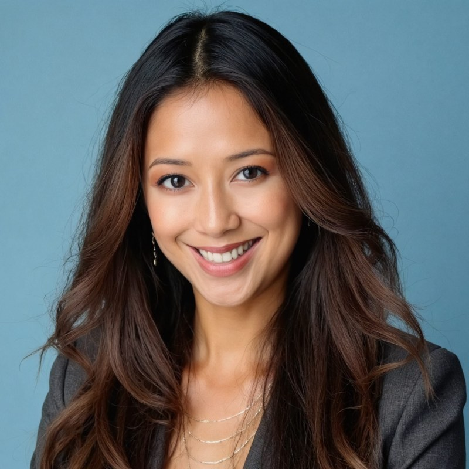

{{r.t}}
{{r.c}} · {{r.w}}
- {{x}}

melaniedeleon.Melanie de Leon — product marketing and growth leader for SaaS, emerging tech, digital media, and Fortune 500 consumer companies. Open to VP Marketing / VP Product.
Or LinkedIn · 310-736-5993 · Los Angeles Metropolitan Area
Praise from engineering and executive partners
“From an engineering perspective she was one of my favorite cross-functional partners.”
“Melanie raises the bar on clarity, accountability, and execution across complex teams.”
Trusted by engineering and executive partners. Sourced from public LinkedIn recommendations. Full profile: linkedin.com/in/melaniedeleon
Consumer, media & tech brands led: Warner Bros., Disney/ABC, Sony Pictures, CBS, CNN, Discovery, HSN, Kraft, Nestlé, GSN, G4
A rare combination of product marketing, growth leadership, and hands-on product strategy. Melanie embeds PLG and lifecycle optimization directly into the product experience and translates complex tech into clear value props.
Tenacious problem-solver who cuts through noise, focuses teams on outcomes, and rolls up her sleeves. Equally at home with Product, Engineering, Sales, and Operations.
Through-line: digital product innovation — how breakthrough products are positioned, experienced, and adopted. Now focused on helping AI-driven products grow in signal-constrained ecosystems where precision, experimentation, and storytelling must work together.
Consumer Product Marketing · Media Buying · Social Media Optimization · PLG · Lifecycle · GTM Strategy · MarTech · MMM
{{e.d}}
{{i.d}}
Full history in LinkedIn PDF. Highlights below — contact for resume.
{{d.t}} — {{d.d}}
SaaS, marketplaces, emerging tech, and consumer platforms. AI-driven GTM, PLG, and lifecycle — with full revenue accountability.
Email is fastest. Based in Los Angeles Metropolitan Area.